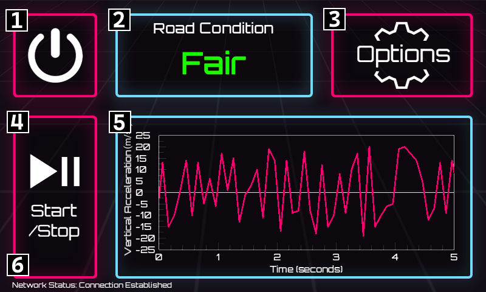

Documentation
RoadMonitor API
We provide an API that allows you to check our road roughness data from anywhere.
Currently, everyone is allowed to make requests.
In addition, all request parameters are also contained in the response.
The details of the error are returned in the following format:
{
"detail": "lng (longitude) must be within the bounds [-180, 180]."
}
"lat": 45.28899,
"lng": -75.83657,
"radius": 450,
"start": 0.0,
"end": 1773064458733.683,
"streetname": "Old Richmond Road",
"num_points": 24,
"points_variance": 0.8097826086956522,
"roughness": 2.125
}
Currently, everyone is allowed to make requests.
Request Format
GET http://www.roadmonitor.online:8000/conditions/coords?lat={latitude}&lng={longitude}Required Parameters
| Name | Data Type | Description |
| lat | float | The latitude in Decimal Degree format. |
| lng | float | The longitude in Decimal Degree format. |
Optional Parameters
| Name | Data Type | Description | Default Value |
| radius | float | The radius around the specified coordinates to search for roughness, in meters. | 200 |
| start | float | The beginning of the time range to search, in UNIX epoch milliseconds. If start=end=0, no time constraint (default behavior). | 0 |
| end | float | The end of the time range to search, in UNIX epoch milliseconds. If start=end=0, no time constraint (default behavior). | 0 |
Response Parameters
| Name | Data Type | Description |
| streetname | str | The street for which this data is applicable. Selected based on the closest road to the request's coordinates. |
| num_points | int | The number of non-outlier points used to make the roughness calculation. |
| points_variance | float | The variance of the non-outlier points used in the roughness calculation. |
| roughness | float | A roughness score for the requested road, for the radius centered at the requested coordinates. The roughness score is an approximation of the International Roughness Index (IRI), therefore a higher score corresponds to a rougher road. |
In addition, all request parameters are also contained in the response.
Errors
If one or more parameters in the request is invalid, the API will return an error message with the code 400.The details of the error are returned in the following format:
{
"detail": "lng (longitude) must be within the bounds [-180, 180]."
}
Request Example
http://www.roadmonitor.online:8000/conditions/coords?lat=45.28899&lng=-75.83657&radius=450&start=0&end=1773064638573Response Example
{"lat": 45.28899,
"lng": -75.83657,
"radius": 450,
"start": 0.0,
"end": 1773064458733.683,
"streetname": "Old Richmond Road",
"num_points": 24,
"points_variance": 0.8097826086956522,
"roughness": 2.125
}
Sensor Module Instructions
The sensor module takes USB-C power. Most modern cars have a usb charging port, otherwise, you may need an adaptor.
Once you plug the device in, it will automatically boot up and display the RoadMonitor UI, which will look something like this:
The options screen allows you to connect to the network and help us collect more accurate data. Please visit it and adjust the device for your vehicle before you begin driving!
Once your options are set up, place the device on a flat surface in your vehicle where it won't slip. Start driving, and the sensor module will automatically record the roughness of roads you drive on.
Thank you for helping us keep our strets well-maintained!
Once you plug the device in, it will automatically boot up and display the RoadMonitor UI, which will look something like this:

[1] Power Button:
Tap to turn the device off.
Tap to turn the device off.
[2] Road Condition Display:
Displays current road roughness in a simplified scale: Very Poor, Poor, Fair, Good, Very Good.
Displays current road roughness in a simplified scale: Very Poor, Poor, Fair, Good, Very Good.
[3] Options Button:
Tap to access the options menu.
Tap to access the options menu.
[4] Start/Stop Button:
Tap to pause or resume collecting road data, without shutting the device off. Collection is enabled by default.
Tap to pause or resume collecting road data, without shutting the device off. Collection is enabled by default.
[5] Accelerometer Readings Graph:
Shows the previous 5 seconds of accelerometer readings.
Shows the previous 5 seconds of accelerometer readings.
[6] Network Status Display:
Shows if the device has a network connection. A network connection is required for data collection.
Shows if the device has a network connection. A network connection is required for data collection.
The options screen allows you to connect to the network and help us collect more accurate data. Please visit it and adjust the device for your vehicle before you begin driving!
[1] Back Button:
Return to the main screen.
Return to the main screen.
[2] Vehicle Year Selector:
Tap the + or - buttons to specify which year your vehicle was manufactured.
Tap the + or - buttons to specify which year your vehicle was manufactured.
[3] Vehicle Class Selector:
Tap to cycle through vehicle class options. Select if your vehicle is economy, mid-range, or luxury.
Tap to cycle through vehicle class options. Select if your vehicle is economy, mid-range, or luxury.
[4] Vehicle Type Selector:
Tap to cycle through vehicle body type options. Select if your vehicle is an SUV, sedan, truck, or minivan.
Tap to cycle through vehicle body type options. Select if your vehicle is an SUV, sedan, truck, or minivan.
[5] Network Selector:
Tap to connect to a network. We recommend using your mobile phone's hotspot, so that you don't drop connection while driving. Please note that you must be connected to a network for the data to be properly collected!
Tap to connect to a network. We recommend using your mobile phone's hotspot, so that you don't drop connection while driving. Please note that you must be connected to a network for the data to be properly collected!
Once your options are set up, place the device on a flat surface in your vehicle where it won't slip. Start driving, and the sensor module will automatically record the roughness of roads you drive on.
Thank you for helping us keep our strets well-maintained!
Terms of Use / Privacy Policy
By using the RoadMonitor service or a sensor module, you agree to the following:
RoadMonitor does not store any identifiable user information. All data sent to our database is anonymized and cannot be traced back to the user once stored. The sensor module does not record any audio, video, or other information beyond accelerometer and GPS readings. Once stored in the database, RoadMonitor is allowed to distribute the collected data to any user who requests it through the RoadMonitor API. RoadMonitor's search page may ask for your location, but this information is not stored, and is used exclusively to determine the initial position of the draggable map.
RoadMonitor does not store any identifiable user information. All data sent to our database is anonymized and cannot be traced back to the user once stored. The sensor module does not record any audio, video, or other information beyond accelerometer and GPS readings. Once stored in the database, RoadMonitor is allowed to distribute the collected data to any user who requests it through the RoadMonitor API. RoadMonitor's search page may ask for your location, but this information is not stored, and is used exclusively to determine the initial position of the draggable map.